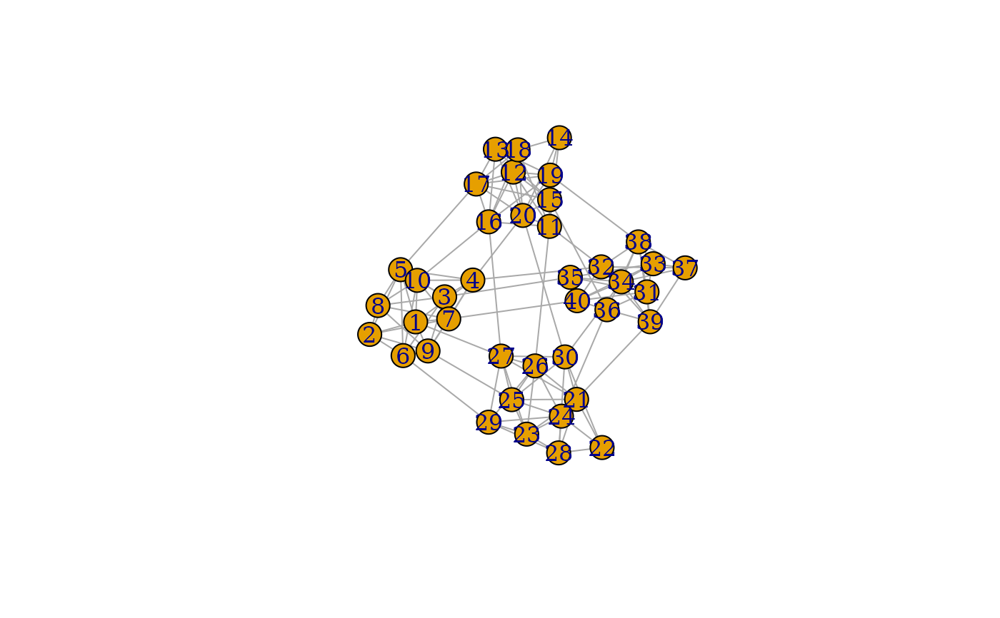

This set of graph creation algorithms simulate the topology by, in some way, connecting subgraphs. The nature of their algorithm is described in detail at the linked igraph documentation.
play_blocks(n, size_blocks, p_between, directed = TRUE, loops = FALSE)
play_blocks_hierarchy(n, size_blocks, rho, p_within, p_between)
play_islands(n_islands, size_islands, p_within, m_between)
play_smallworld(
n_dim,
dim_size,
order,
p_rewire,
loops = FALSE,
multiple = FALSE
)The number of nodes in the graph.
The number of vertices in each block
The probability of edges within and between groups/blocks
Should the resulting graph be directed
Are loop edges allowed
The fraction of vertices per cluster
The number of densely connected islands
The number of nodes in each island
The number of edges between groups/islands
The dimension and size of the starting lattice
The neighborhood size to create connections from
The rewiring probability of edges
Are multiple edges allowed
A tbl_graph object
play_blocks(): Create graphs by sampling from stochastic block
model. See igraph::sample_sbm()
play_blocks_hierarchy(): Create graphs by sampling from the hierarchical
stochastic block model. See igraph::sample_hierarchical_sbm()
play_islands(): Create graphs with fixed size and edge
probability of subgraphs as well as fixed edge count between subgraphs. See
igraph::sample_islands()
play_smallworld(): Create graphs based on the Watts-Strogatz small-
world model. See igraph::sample_smallworld()
Other graph games:
evolution_games,
sampling_games,
type_games
plot(play_islands(4, 10, 0.7, 3))
